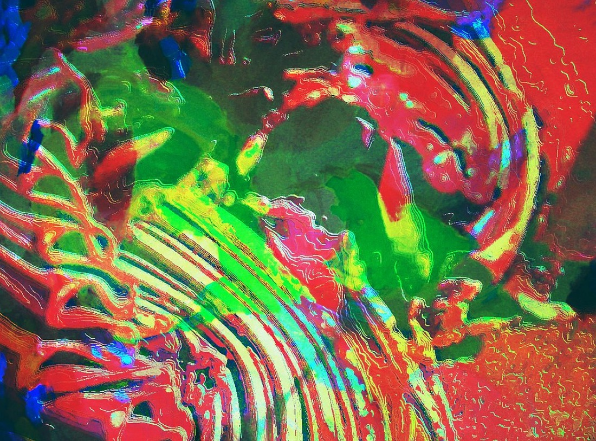
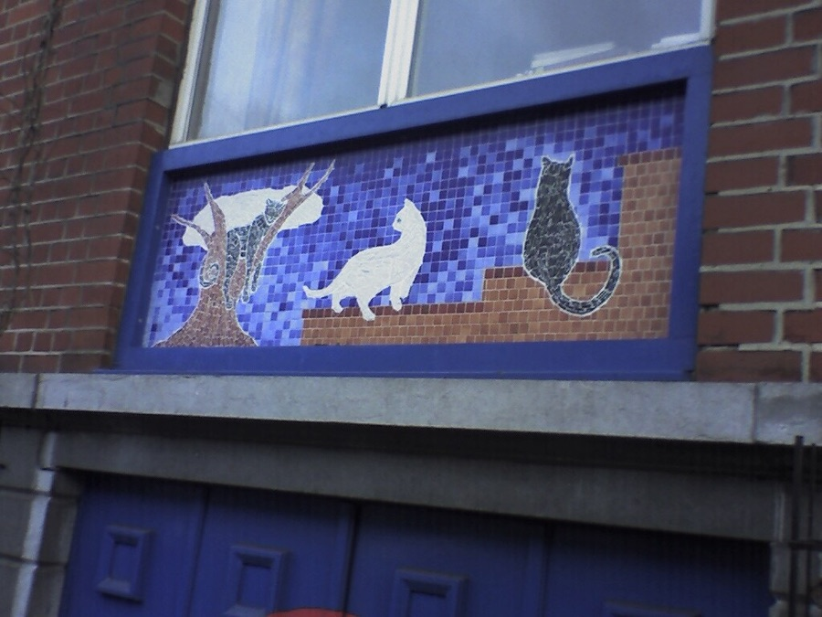
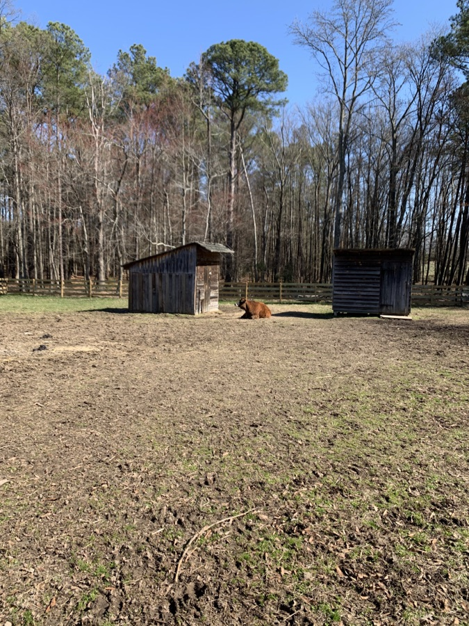
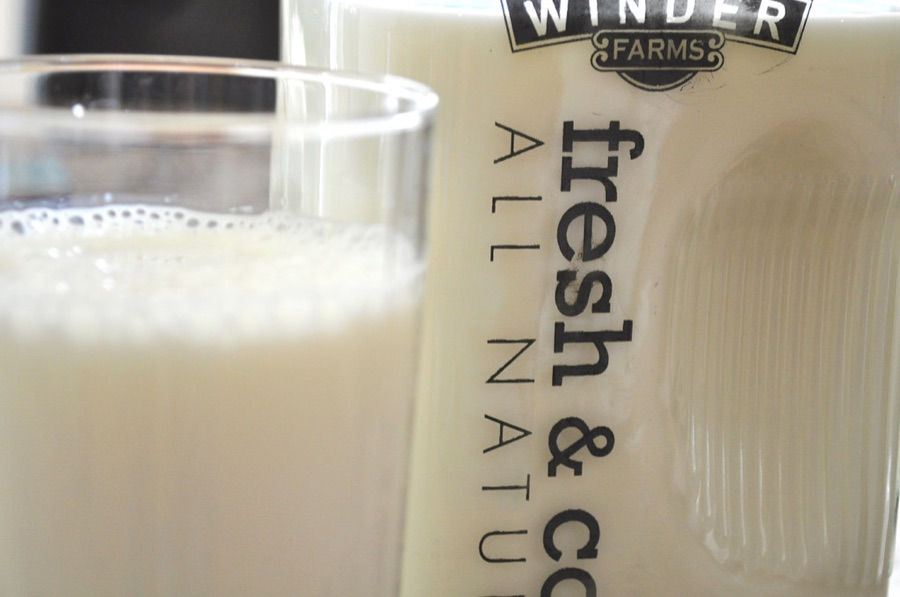
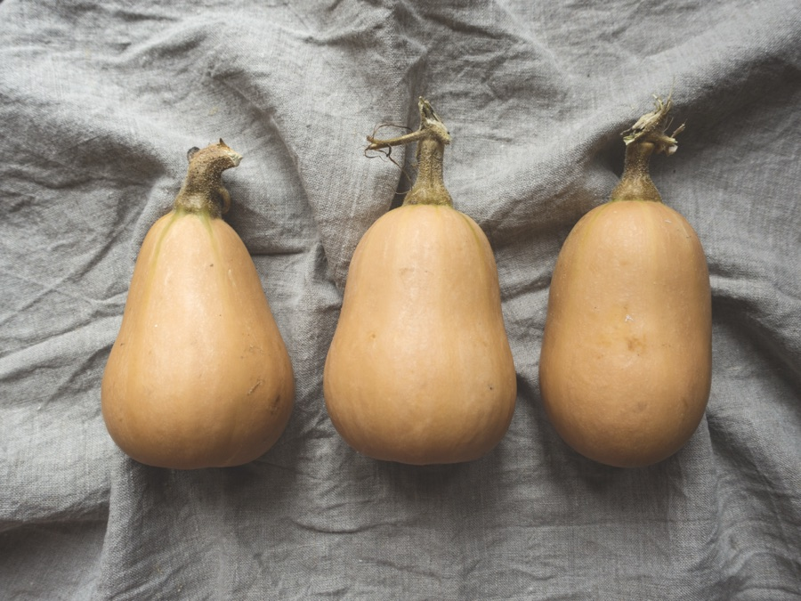

Хозяйственный, серьёзный и понимающий толк в вещах. Корова доится, дом стоит, зимой все сыты — проходите, чаю налью. Только сапоги вытирайте.
Фамилия у меня от слова «матрос» — дедушка на кораблях плавал. А зовут просто котом, и меня это, между прочим, слегка задевает, но я не гордый.
Я бережливый, рассудительный и слегка ворчливый — исключительно по делу. Не жадный, а хозяйственный: две большие разницы. Порядок в хозяйстве начинается с порядка в расходах.
Живу с Дядей Фёдором и Шариком. Пёс — работник так себе, всё за зайцами с фоторужьём. А хозяйство на ком? Правильно, на коте.

Кот, а веду целое хозяйство — и прибыльно. Главный актив — корова Мурка и телёнок Гаврюша: приплод и рост активов, как у людей, только с рогами.


Молоко, сметана, масло — всё своё, с гарантией качества. Я лично пробую.
Заготовки, дрова, ремонт, бюджет. Завхоз, бухгалтер и управляющий в одном лице.
Растяну скромные средства так, что всем хватит и на чёрный день останется.
Объясняю Шарику и Дяде Фёдору, как вести дела. Слушают через раз, но метод верный.

«Совместный труд — для моей пользы — он объединяет.»— кот Матроскин. Пока другие мечтают, я делаю запасы.